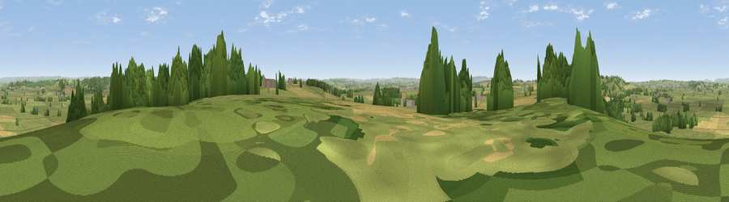

Viewpoint near Pitney
#18909 in England · top 53% of its area beats it · near PitneyWhere it is
The exact computed spot (ST 45625 29475). Click the marker for map links.
The view, rendered

A 360° render of this exact spot computed from the terrain model, tree cover and land cover — summer colours, afternoon light, calibrated against photographs of famous viewpoints. Real trees, hedges and buildings will differ in detail.
The panorama
Grey silhouette: terrain skyline in each direction (720 bearings, Earth curvature and refraction included). Dashed green: skyline with trees (+15 m) and buildings (+8 m) as obstacles. Blue strip: how far the ground is visible on each bearing.
Where the view opens
Wedge length = distance to the farthest visible ground on that bearing (vegetation-aware). Rings at 10, 25 and 50 km.
What fills the view
58% grassland · 26% cropland · 15% woodland ·
Angular shares of the visible panorama (visual magnitude), not map area. Landscape diversity 0.43 (0–1 Shannon).
Key numbers
More beautiful places nearby
The staircase of upgrades: each row has a higher view potential than everything closer. Driving times are estimates from straight-line distance, calibrated against real road routing — check an actual route before setting out.
| Place | Direction | Drive | Score |
|---|---|---|---|
| Viewpoint near Pitney | ENE · 0 km | ~1 min | 55.3 |
| Lollover Hill | NNE · 3 km | ~8 min | 66.4 |
| Viewpoint near Street | NNE · 6 km | ~12 min | 66.6 |
| Viewpoint near Kingsdon | ESE · 6 km | ~13 min | 67.2 |
| Glastonbury Tor | NNE · 11 km | ~20 min | 75.8 |
| Socombe Hill | NW · 11 km | ~21 min | 76.4 |
| Viewpoint near Hewish | SSW · 20 km | ~34 min | 78.5 |
| Viewpoint near Axbridge | N · 26 km | ~42 min | 79.2 |
51.06202, -2.77730 · source: screening · position refined by local search. Computed location — check access rights before visiting.